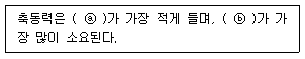
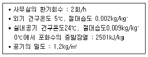
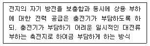
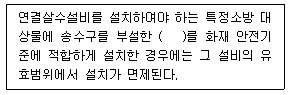
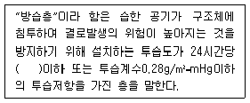
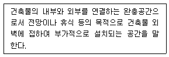

건축설비기사 (2015-05-31 기출문제)
1과목: 건축일반
1. 벽돌쌓기에 대한 설명으로 옳지 않은 것은?
- 영식쌓기는 모서리에 반절 또는 이오토막을 사용한다.
- 미식쌓기는 막힌줄눈이 많이 생겨 구조적으로 영식쌓기보다 튼튼하다.
- 불식쌓기는 통줄눈이 많이 생기며 의장적 효과를 나타내기 위한 벽체에 사용된다.
- 화란식쌓기는 모서리에 칠오토막을 사용하고 주로 내력벽에 사용된다.
(정답률: 67%)

2. 도서관 출납 시스템에 대한 설명 중 옳지 않은 것은?
- 개가식은 자유개가식, 안전개가식, 반개가식 등이 있다.
- 폐가식은 열람자 자신이 서가에서 자료를 꺼내서 관원의 확인을 받아 대출기록을 제출하는 방식이다.
- 자유개가식에서는 반납할 때 서가의 배열이 흩어지는 것을 방지하기 위해 반납대를 두는 경우도 있다.
- 폐가식은 방재, 방습 등을 위해 서고 자체의 실내환경을 유지해야 한다.
(정답률: 89%)
3. 사무소 건축에서 층고를 낮추는 이유와 거리가 먼 것은?
- 건축비의 경제적 효과를 위함이다.
- 층수를 많이 얻기 위함이다.
- 실내 공기 조절의 효과를 높이기 위함이다.
- 외관을 보기 좋게 하기 위함이다.
(정답률: 89%)
4. 건축물의 구성형식에서 가구식 구조에 해당하는 것은?
- 목 구조
- 벽돌 구조
- 콘크리트블록 구조
- 철근콘크리트 구조
(정답률: 82%)
5. 좁은 대지에서 주차장 공간을 효율적으로 마련하기에 가장 적당한 형식은?
- 스킵 플로어 형식
- 필로티 형식
- 코어 형식
- 회랑식
(정답률: 74%)
6. 인체의 쾌적한 환경에 영향을 미치는 물리적 온열요소에 속하지 않는 것은?
- 기온
- 습도
- 복사열
- 열전도
(정답률: 81%)
7. 목재로 대형 무지주 지붕을 설치하고자 한다. 구조적으로 가장 적합하지 않은 방법은?
- 목재의 이음부위를 최대한 많은 볼트로 체결하여 장스팬의 목재를 제작하여 지붕을 설치한다.
- 집성목재로 소요응력에 필요한 단면을 만들어 단일 부재의 아치구조로 지붕을 설치한다.
- 단면이 작은 목재를 트러스 형태로 조립하여 지붕을 설치한다.
- 인장력을 받는 부재는 Steel 케이블로 설치하고, 압축부재는 목재를 사용하여 지붕을 설치한다.
(정답률: 67%)
8. 호텔건축의 동선 계획 중 옳지 않은 내용은?
- 종업원의 출입구 및 물품의 반, 출입구는 각각 별도로 하여 관리의 효율화를 도모한다.
- 고객 동선과 서비스 동선은 교차되지 않게 출입구를 분리한다.
- 숙박고객과 연회고객의 출입구는 분리한다.
- 최상층에 레스토랑을 설치하는 방안은 엘리베이터 계획과 상관없이 나중에 결정한다.
(정답률: 89%)
9. 건축의 성립에 영향을 미치는 요소들에 대한 설명으로 옳지 않은 것은?
- 자연 조건이 비슷한 여러 나라가 서로 다른 건축형태를 갖는 것은 기후 및 풍토적 요소 때문이다.
- 지붕의 형태, 경사 등은 기후 및 풍토적 요소의 영향을 받는다.
- 건축재료와 이를 구성하는 기술적인 방법에 따라 건물 형태가 변화하는 것은 기술적 요소에서 기인한다.
- 봉건시대에 신을 위한 건축이 주류를 이루고 민주주의 시대에 대중을 위한 학교, 병원 등의 건축이 많아진 것은 정치 및 종교적 요소 영향 때문이다.
(정답률: 82%)
10. 잔향시간이란 음의 음압레벨이 얼마 감쇠하는데 소요되는 시간인가?
- 50dB
- 60dB
- 70dB
- 80dB
(정답률: 91%)
11. 주거밀도를 표현하거나 규제하는 용어들에 대한 설명 중 옳은 것은?
- 건폐율=[건축물의 연면적/대지면적]×100(%)
- 용적율=[건축면적/건축물의 연면적]×100(%)
- 호수밀도=[실제가구수/적정수요가구수]× 100(%)
- 인구밀도=[인구수/토지면적](인/ha)
(정답률: 78%)
12. 기본벽돌(190×90×57mm)을 칠오토막으로 마름질하여 사용할 때 벽돌의 길이로 가장 근접한 것은?
- 47mm
- 67mm
- 132mm
- 142mm
(정답률: 63%)
13. 여러 음이 혼합적으로 들리는 경우에서도 대화 상대의 소리만을 선택적으로 들을 수 있는 것과 관련된 현상은?
- 칵테일파티 효과
- 마스킹 효과
- 간섭 효과
- 코인시던스 효과
(정답률: 83%)
14. 조도에 관한 설명으로 옳은 것은?
- 빛을 발하는 점에서 어느 방향으로 향한 단위 입체각 당의 발산광속을 말한다.
- 빛의 방향과 수직인 면의 빛의 조도는 광원의 광도에 비례하고 거리의 제곱에 반비례한다.
- 어느 면의 조도는 광도를 그 면의 겉보기 면적으로 나눈 값이다.
- 조도의 측정단위는 칸델라이다.
(정답률: 73%)
15. 실내 환기회수의 의미를 가장 잘 설명한 것은?
- 실의 단위 체적당 환기량과 실용적의 비
- 실의 단위 시간당 환기량과 실용적의 비
- 1인당 환기량과 실용적의 비
- 실의 단위 면적당 환기량
(정답률: 63%)
16. 리조트호텔의 대지조건으로 가장 거리가 먼 것은?
- 교통이 원활하고 주차장 시설이 충분해야 한다.
- 주위의 경치가 좋아야 한다.
- 물이 맑고 수원이 풍부해야 한다.
- 수해나 풍해 등으로부터 위험이 없어야 한다.
(정답률: 84%)
17. 목구조의 보강 철물에 관한 설명으로 옳지 않은 것은?
- 왕대공과 평보의 맞춤부에는 감잡이쇠로 보강한다.
- 처마도리와 깔도리는 꺾쇠롤 긴결한다.
- 토대는 기초에 앵커 볼트로서 고정한다.
- 포갬보는 그 사이에 듀벨을 끼우고 볼트 조임을 한다.
(정답률: 42%)
18. 목재 마루널과 관계된 부재 중 가장 거리가 먼 것은?
- 동바리
- 장선
- 달대
- 멍에
(정답률: 77%)
19. 결로 발생의 원인과 가장 거리가 먼 것은?
- 실내외의 온도차
- 실내 습기의 부족
- 구조체의 열적 특성
- 생활습관에 의한 환기부족
(정답률: 85%)
20. 주택의 욕실계획에 대한 설명 중 옳지 않은 것은?
- 출입문은 거실 쪽으로 열리게 한다.
- 거실과 침실에서 멀지 않게 한다.
- 천장은 적당히 경사지게 하는 것이 좋다.
- 현관이나 응접실과는 다소 격리시키는 것이 바람직하다.
(정답률: 76%)
2과목: 위생설비
21. 어느 사무소 건물의 연면적이 5000m2일 때 1일 예상 급수량은? (단, 이 건물의 유효면적과 연면적의 비는 60%이고, 유효면적당 인원은 0.2인/m2이며, 1인 1일당 급수량은 100L이다.)
- 30m3/d
- 60m3/d
- 300m3/d
- 600m3/d
(정답률: 68%)
22. 액화천연가스(LNG)에 관한 설명으로 옳지 않은 것은?
- 공기보다 가볍다.
- 아황산가스, 매연 등의 오염이 없다.
- 발열량이 액화석유가스(LPG)보다 높다.
- 천연가스를 정제해서 얻은 메탄을 주성분으로 하는 가스를 냉각시켜 액화한 것이다.
(정답률: 78%)
23. 배수 트랩의 필요 조건으로 옳지 않은 것은?
- 자정작용이 가능할 것
- 봉수깊이는 50mm 이상 100mm 이하일 것
- 기구트랩의 위의 상부에 통기관 접속부를 가질 것
- 봉수부에 이음을 사용하는 경우에는 금속제 이음을 사용할 것
(정답률: 49%)
24. 오수의 생물화학적 처리법 중 생물막법에 속하지 않는 것은?
- 접촉산화방식
- 살수여상방식
- 표준활성오니방식
- 회전원판 접촉방식
(정답률: 70%)
25. 음료용 저수탱크의 간접배수관의 배수구 공간은 최소 얼마 이상이어야 하는가?
- 50mm
- 100mm
- 150mm
- 200mm
(정답률: 52%)
26. 옥내소화전설비에서 송수구의 설치 높이 기준은?
- 지면으로부터 높이 0.5m 이하의 위치
- 지면으로부터 높이 0.5m 이상 1.0m 이하의 위치
- 지면으로부터 높이 1.0m 이상 1.5m 이하의 위치
- 지면으로부터 높이 1.5m 이상 2.0m 이하의 위치
(정답률: 75%)
27. 직경 200mm의 강관에 2400L/min의 물이 흐를 때 강관 내의 유속은?
- 0.04m/sec
- 1.27m/sec
- 1.72m/sec
- 0.40m/sec
(정답률: 71%)
28. 배관공사에서 관경이 다른 배관의 접합에 사용되는 것은?
- 소켓
- 니플
- 리듀서
- 플러그
(정답률: 83%)
29. 실양정 18m, 환산관 길이 60m, 배관의 마찰손실 수두 0.03mAq/m, 유속 1.4m/s일 때 양수펌프의 전양정은 약 얼마인가?
- 20m
- 42m
- 60m
- 78m
(정답률: 42%)
30. 중앙식 급탕양식 중 간접가열식에 관한 설명으로 옳지 않은 것은?
- 대규모 급탕설비에 적합하다.
- 고압용 보일러를 설치하여야 한다.
- 가열보일러는 난방용 보일러와 겸용할 수 있다.
- 저탕조 내에 설치한 코일을 통해서 관내의 물을 간접적으로 가열한다.
(정답률: 79%)
31. 급수방식에 관한 설명으로 옳지 않은 것은?
- 압력탱크 급수방식에서는 저수조가 필요하다.
- 고가탱크 급수방식은 다른 방식에 비해 수질 오염에 취약하다.
- 압력탱크 급수방식은 급수압력에 변동이 없는 것이 특징이다.
- 고가탱크 급수방식에서는 각 급수 기구에 중력식으로 급수된다.
(정답률: 78%)
32. 급수배관의 설계 및 시공에 관한 설명으로 옳지 않은 것은?
- 구조체의 관통부는 슬리브를 사용한다.
- 음료용 배관과 비음료용 배관을 크로스 커넥션하지 않는다.
- 수격작용이 발생할 우려가 있는 곳에는 에어챔버를 설치한다.
- 급수관과 배수관이 교차될 때는 배수관의 아래 부분에 급수관을 매설한다.
(정답률: 81%)
33. 스프링클러헤드가 설치되어 있는 배관으로 정의 되는 것은?
- 주배관
- 교차배관
- 가지배관
- 급수배관
(정답률: 83%)
34. 배수계통에서 트랩의 봉수가 파괴되는 원인 중 액체의 응집력과 액체와 고체 사이의 부착력에 의해 발생하는 것은?
- 증발 현상
- 모세관 현상
- 자기사이폰 작용
- 유도사이폰 작용
(정답률: 69%)
35. 개별식(국소식) 급탕방식에 관한 설명으로 옳지 않은 것은?
- 배관 중의 열손실이 크다.
- 기존 건물에 설치가 용이하다.
- 주택 등 소규모 건물에 적합하다.
- 급탕 개소마다 가열기의 설치 공간이 필요하다.
(정답률: 83%)
36. 대변기의 세정급수 방식 중 하이탱크식과 로우탱크식에 관한 설명으로 옳은 것은?
- 하이탱크식은 로우탱크식보다 세정소음이 작다.
- 로우탱크식과 하이탱크식은 연속 사용이 가능하다.
- 로우탱크식은 하이탱크식보다 화장실 내의 공간을 적게 차지하여 유리하다.
- 하이탱크식과 로우탱크식은 탱크로의 급수 수압이 다소 낮아도 사용이 가능하다.
(정답률: 69%)
37. 물의 정수과정에서 물속에 있는 철분을 제거하기 위한 처리과정은?
- 혐기
- 폭기
- 불소 주입
- 응집제 첨가
(정답률: 73%)
38. 배수 입상관으로 부터 취출하여 위쪽의 통기관에 연결되는 배관으로, 배수 입상관 내의 압력을 같게 하기 위해 사용되는 도피통기관은?
- 습통기관
- 공용통기관
- 결합통기관
- 신정통기관
(정답률: 62%)
39. 급탕배관에 관한 설명으로 옳은 것은?
- 배관은 하향 구배로 하는 것이 원칙이다.
- 탕비기 주위의 급탕배관은 가능한 짧게 하고 공기가 체류하지 않도록 한다.
- 배관은 신축에 견디도록 가능하며 요철부가 많도록 배관하는 것이 원칙이다.
- 물이 뜨거워지면 수중에 포함된 공기가 분리되기 쉽고, 이 공기는 배관의 상부에 모여서 급탕의 순환을 원활하게 한다.
(정답률: 72%)
40. 다음 중 펌프를 비속도의 크기 순서대로 올바르게 나타낸 것은?
- 터빈펌프 ＜ 볼류트펌프 ＜ 사류펌프 ＜ 축류펌프
- 볼류트펌프 ＜ 사류펌프 ＜ 축류펌프 ＜ 터빈펌프
- 사류펌프 ＜ 축류펌프 ＜ 터빈펌프 ＜ 볼류트펌프
- 축류펌프 ＜ 터빈펌프 ＜ 볼류트펌프 ＜ 사류펌프
(정답률: 64%)
3과목: 공기조화설비
41. 덕트 경로 중 그 단면적이 확대되었을 경우의 압력 변화에 관한 설명으로 옳은 것은?
- 전압이 증가한다.
- 동압이 증가한다.
- 정압이 증가한다.
- 전압, 정압, 동압이 모두 증가한다.
(정답률: 60%)
42. 다음 송풍기 풍량제어법에 관한 설명 중 ( )안에 알맞은 내용은?

- ⓐ 회전수 제어, ⓑ 토출댐퍼제어
- ⓐ 토출댐퍼제어, ⓑ 회전수 제어
- ⓐ 흡입댐퍼제어, ⓑ 토출댐퍼제어
- ⓐ 토출댐퍼제어, ⓑ 흡입댐퍼제어
(정답률: 80%)
43. 가습장치로 G(kg/h)의 공기를 가습할 때 가습량 L(kg/h)은? (단, 가습장치 입출구 공기의 절대습도는 X1, X2(kg/kg´) 이고 가습효율은 100% 이다.)
- L = G(X2 –X1)
- L = 1.2G(X2 –X1)
- L = 717G(X2 –X1)
- L = 597.5G(X2 –X1)
(정답률: 58%)
44. 다음과 같은 조건에 있는 크기가 7m×6m×3.5m인 사무실의 환기에 의한 잠열만의 손실열량은?

- 6176kJ/h
- 7076kJ/h
- 8076kJ/h
- 9076kJ/h
(정답률: 46%)
45. 바이패스형 변풍량 유닛(VAV unit)에 관한 설명으로 옳지 않은 것은?
- 유닛의 소음발생이 크다.
- 송풍덕트 내의 정압제어가 필요 없다.
- 덕트계통의 증설이나 개설에 대한 적응성이 적다.
- 천장 내의 조명으로 인한 발생열을 제거할 수 있다.
(정답률: 40%)
46. 보일러에 관한 설명으로 옳지 않은 것은?
- 입형보일러는 설치 면적이 작고 취급은 용이하나 사 용압력이 낮다.
- 노통 연관보일러는 부하변동의 적응성이 낮으나 예열 시간은 짧다.
- 주철제 보일러는 규모가 비교적 작은 건물의 난방용으로 사용된다.
- 수관보일러는 대형건물 또는 병원이나 호텔 등과 같이 고압증기를 다량 사용하는 곳에 사용된다.
(정답률: 62%)
47. 밸브를 완전히 열면 배관경과 밸브의 구경이 동일하므로 유체의 저항이 적지만 부분개폐 상태에서는 밸브판이 침식되어 완전히 닫아도 누설될 우려가 있는 밸브는?
- 체크밸브
- 앵글밸브
- 게이트밸브
- 글로브밸브
(정답률: 74%)
48. 공기여과장치에서 입구 측의 오염도가 0.5mg/m3, 출구층의 오염도가 0.14mg/m3일 때, 이 공기여과장치의 여과효율은?
- 67%
- 72%
- 77%
- 82%
(정답률: 77%)
49. 공기조화배관의 배관회로방식에 관한 설명으로 옳지 않은 것은?
- 개방회로방식은 보통 축열방식이나 개방식 냉각탑의 냉각수 배관 등에 응용된다.
- 밀폐회로방식은 순환수가 공기와 접촉하지 않으므로 물처리비가 적게 든다.
- 개방회로방식의 경우 펌프의 양정에는 실양정이 포함되므로 동력비가 많이 든다.
- 밀폐회로방식에는 물의 팽창을 흡수하기 위해 팽창관이 사용되며 팽창탱크는 사용하지 않는다.
(정답률: 76%)
50. 일사에 의한 차폐계수가 1인 보통유리를 통해 투과되는 일사량이 200W/m2, 유리로부터의 관류열량이 40W/m2일 경우, 유리로부터의 취득열량은? (단, 창면적은 5m2이다.)
- 200W
- 1000W
- 1200W
- 1400W
(정답률: 55%)
51. 어떤 습공기의 건구온도가 20℃, 절대습도가 0.01kg/kg´일 때, 이 습공기의 엔탈피는? (단, 건공기의 정압비열은 1.01kJ/kg ㆍ K, 수증기의 정압비열은 1.85kJ/kg ㆍ K, 0℃에서 포화수의 증발잠열은 2501kJ/kg이다.)
- 31.92kJ/kg
- 35.28kJ/kg
- 45.58kJ/kg
- 52.92kJ/kg
(정답률: 54%)
52. 축열조를 사용하는 공기조화방식에 관한 설명으로 옳지 않은 것은?
- 기계실 면적이 감소된다.
- 심야전력을 이용할 수 있다.
- 공조기측의 부분부하나 연장운전에 대처하기 쉽다.
- 피크커트(peak cut)에 의해 열원용량을 감소시킬 수 있다.
(정답률: 74%)
53. 주방, 공장, 실험실에서와 같이 오염물질의 확산 및 방산을 가능한 한 극소화시키려고 할 때 적용되는 환기 방식은?
- 희석환기
- 국소환기
- 전체환기
- 자연환기
(정답률: 84%)
54. 상대습도 60%인 습공기의 건구온도(a), 습구온도(b), 노점온도(c)의 크기 관계가 옳은 것은?
- a ＞ b ＞ c
- b ＞ a ＞ c
- b ＞ c ＞ a
- c ＞ b ＞ a
(정답률: 79%)
55. 다음 중 배관계통의 방진을 위해 고려해야 할 사항과 가장 거리가 먼 것은?
- 진동원의 기기를 지지한다.
- 배관을 밀고 당기는 힘이 작용되지 않도록 배치한다.
- 소구경 배관에서는 플렉시블 호스를 사용하는 경우가 있다.
- 바닥, 벽 등을 관통하는 곳에서는 배관을 직접 건물에 고정한다.
(정답률: 79%)
56. 냉 ㆍ 난방부하 계산에 관한 설명으로 옳지 않은 것은?
- 투습으로 인한 열부하는 매우 작기 때문에 일반적으로 부하계산에서 제외한다.
- 유리창 종류와 블라인드 유무에 따라 달라지는 차폐 계수는 그 최대값이 1.0 이다.
- 작업상태가 동일한 경우 인체로부터의 발생열량은 실내건구온도가 높을수록 현열량과 잠열량 모두 커진다.
- 태양으로부터의 일사 열부하는 냉방부하계산에서는 포함되나, 난방부하계산에서는 제외되는것이 일반적이다.
(정답률: 41%)
57. 정압 재취득법에 관한 설명으로 옳지 않은 것은?
- 고속덕트의 경우 부적합하다.
- 취출구 직전의 정압이 대략 일정해진다.
- 등압법에 비해 송풍기 동력이 절약되며 풍량조절이 용이하다.
- 덕트 구간에서 앞 구간의 동압감소로 인해 얻은 정압을 다음 구간에서 이용하는 방법이다.
(정답률: 65%)
58. 흡수식 냉동기에 관한 설명으로 옳지 않은 것은?
- 압축식에 비해 냉각탑의 용량이 커질 수 있다.
- 기기 내부가 진공에 가까워 파열의 위험이 없다.
- 예냉시간이 짧아 냉수가 나올 때까지 시간이 빠르다.
- 기기 구성요소 중 회전하는 부분이 적어 소음이 매우 작다.
(정답률: 54%)
59. 에어와셔의 통과공기량이 20000kg/h, 수량(水量)이 15600kg/h이고, 입구공기의 엔탈피 23.9kJ/kg, 출구공기의 엔탈피 26.8kJ/kg 일 때, 에어와셔의 입구 수온은? (단, 에어와셔의 출구 수온은 9.3℃, 물의 비열은 4.19kJ/kg ㆍ K이다.)
- 8.4℃
- 9.7℃
- 10.2℃
- 11.5℃
(정답률: 54%)
60. 진공환수식 증기난방에서 리프트 피팅(lift fitting)을 해야 하는 경우는?
- 방열기보다 환수주관이 높을 때
- 방열기보다 환수주관이 낮을 때
- 배관 내의 유체 온도가 너무 높을 때
- 배관 내의 유체 온도가 너무 낮을 때
(정답률: 64%)
4과목: 소방 및 전기설비
61. 무한히 긴 직선 도체에 직류 1[A]의 전류를 흘렸을 경우 이로부터 1[m] 떨어진 점의 자기장의 세기는 몇 [AT/m]인가?
- 1/2π
- 1/π
- π
- 2π
(정답률: 47%)
62. 220[V], 5[A]의 직류전동기를 1시간 사용할 때 전류가 한 일의 양은?
- 1100[Wh]
- 1100[kWh]
- 6600[Wh]
- 6600[kWh]
(정답률: 56%)
63. 용량이 각각 C1, C2인 두 개의 캐패시턴스를 병렬 접속했을 때 합성용량은?
- C1+C2
- 1/(C1+C2)
- (C1 ㆍ C2)/(C1+C2)
- [(C1 ㆍ C2)/C1]+C2
(정답률: 67%)
64. 다음 중 교류전동기에 속하지 않는 것은?
- 복권 전동기
- 권선형 유도 전동기
- 분상 기동형 전동기
- 세이딩 코일형 유도 전동기
(정답률: 56%)
65. 공조설비의 자동제어에서 압력검출소자로 사용되지 않는 것은?
- 모발
- 벨로즈
- 브르돈관
- 다이어프램
(정답률: 64%)
66. 전선의 절연물에 손상 없이 안전하게 흘릴 수 있는 최대 전류를 무엇이라 하는가?
- 허용전류
- 절연전류
- 부하전류
- 안전전류
(정답률: 69%)
67. 전압비(권수비)가 10인 변압기가 있다. 1차 측의 주파수가 60[Hz]일 경우 2차 권선에 유기되는 전압의 주파수는?
- 6[Hz]
- 10[Hz]
- 60[Hz]
- 1/6[Hz]
(정답률: 59%)
68. 자동제어방식 중 디지털방식에 관한 설명으로 옳지 않은 것은?
- 자기진단 기능을 보유하고 있다.
- 기능의 고급화를 도모할 수 있다.
- 제어의 정밀도가 낮으며 신뢰성이 다소 떨어진다.
- 각종 제어로직은 손쉽게 소프트웨어에 의해 조정될 수 있다.
(정답률: 81%)
69. 공조시스템의 냉온수의 유량 제어를 위한 비례 제어 방식의 조작부로 주로 사용되는 기기는?
- 모듀트럴 모터
- 직동식 전자밸브
- 플로트(float) 스위치
- 파이롯트식 전자밸브
(정답률: 68%)
70. 최대 수용전력과 부하 설비용량의 비율을 나타낸 것은?
- 역률
- 부하율
- 부등률
- 수용률
(정답률: 63%)
71. 계단통로유도등은 바닥으로부터 높이가 최대 얼마 이하의 위치에 설치하여야 하는가?
- 0.5m
- 1.0m
- 1.5m
- 2.0m
(정답률: 47%)
72. 코일 내부에 상자성체인 철심(core)을 넣어 전류의 자기현상을 이용하여 구동되는 기기에 속하지 않는 것은?
- 전자접촉기
- 전자릴레이
- 솔레노이드 밸브
- 열동형 과부하계전기
(정답률: 51%)
73. 다음 설명에 알맞은 축전지의 사용 중 충전 방식은?

- 보통충전
- 부동충전
- 급속충전
- 균등충전
(정답률: 61%)
74. 양전하를 가지고 있는 물질과 음전하를 가지고 있는 물질을 금속선으로 연결하면 두 전하간의 흡인력으로 음전하는 양전하를 가지고 있는 물질로 이동하는데, 이러한 음전하의 이동을 무엇이라고 하는가?
- 전압
- 전류
- 전도
- 자화
(정답률: 65%)
75. 형광등에 관한 설명으로 옳지 않은 것은?
- 효율이 높다.
- 램프의 휘도가 높다.
- 주위 온도의 영향을 받는다.
- 여러 종류의 광색을 얻을 수 있다.
(정답률: 58%)
76. 자동화재탐지설비의 P형 수신기 감지기 회로의 전로저항은 최대 얼마 이하가 되도록 설치하여야 하는가?
- 30[Ω]
- 50[Ω]
- 70[Ω]
- 90[Ω]
(정답률: 50%)
77. 교류 600[V] 이하의 저압전로의 과전류, 단락전류 및 지락전류를 차단하여 안전을 도모하는 것은?
- 누전 차단기
- 과전류 차단기
- 컷아웃 스위치
- 커버 나이프 스위치
(정답률: 57%)
78. 다음 중 전기집진기, 낙뢰와 가장 관련이 깊은 현상은?
- 정전유도현상
- 자기유도현상
- 상호유도현상
- 전기유도현상
(정답률: 62%)
79. 전동기의 전기적 제동법에 속하지 않는 것은?
- 발전제동
- 회생제동
- 역전제동
- 브레이크제동
(정답률: 64%)
80. 어느 조절 밸브를 완전히 개방하였을 때 99[L/min]의 유량이 흐른다고 한다. 이 밸브의 레인지 어빌리티가 10:1 이라면 최소 가능 조절 유량은?
- 0.99[L/min]
- 9.9[L/min]
- 0.45[L/min]
- 4.5[L/min]
(정답률: 70%)
5과목: 건축설비관계법규
81. 다음은 특정소방대상물의 소방시설 설치의 면제 기준 내용이다. ( )안에 속하지 않는 소방시설은?

- 옥내소화전설비
- 스프링글러설비
- 물분무소화설비
- 미분무소화설비
(정답률: 72%)
82. 건축허가시 미리 소방본부장 또는 소방서장의 동의를 받아야 하는 대상에 속하지 않는 것은?
- 항공기격납고
- 연면적이 100m2인 노유자시설
- 지하층이 있는 건축물로서 바닥면적이 150m2인 층 있는 것
- 차고 ㆍ 주차장으로 사용되는 시설로서 차고・주차장으로 사용되는 층 중 바닥면적 500m2인 층이 있는 시설
(정답률: 62%)
83. 다음 중 건축법령상 다중이용 건축물에 속하지 않는 것은? (단, 층수가 16층 미만이며 해당 용도로 쓰는 바닥면적의 합계가 5000m2 이상인 건축물의 경우)
- 종교시설
- 판매시설
- 숙박시설 중 관광숙박시설
- 문화 및 집회시설 중 전시장
(정답률: 58%)
84. 건축물의 출입구에 설치하는 회전문에 관한 기준 내용으로 옳지 않은 것은?
- 계단이나 에스컬레이터로부터 2m 이상의 거리를 둘것
- 출입에 지장이 없도록 일정한 방향으로 회전하는 구조로 할 것
- 회전문의 회전속도는 분당회전수가 10회를 넘지 아니하도록 할 것
- 자동회전문은 충격이 가하여지거나 사용자가 위험한 위치에 있는 경우에는 전자감지장치 등을 사용하여 정지하는 구조로 할 것
(정답률: 79%)
85. 다음 중 두께가 최소 10cm 이상인 경우 내화구조로 인정되는 것은? (단, 철근콘크리트조인 경우)
- 보
- 계단
- 바닥
- 지붕
(정답률: 61%)
86. 다음은 건축물의 에너지절약설계기준에 따른 방습층의 정의이다. ( ) 안에 알맞은 것은?

- 10g/m2
- 20g/m2
- 30g/m2
- 40g/m2
(정답률: 55%)
87. 오피스텔의 난방설비를 개별난방방식으로 하는 경우에 관한 기준 내용으로 옳지 않은 것은?
- 보일러실은 거실 이외의 장소에 설치할 것
- 보일러실의 윗부분에는 그 면적이 최소 1m2 이상인 환기창을 설치할 것
- 기름보일러를 설치하는 경우에는 기름저장소를 보일러실외의 다른 곳에 설치할 것
- 난방구획마다 내화구조로 된 벽 ㆍ 바닥과 갑종방화문으로 된 출입문으로 구획할 것
(정답률: 64%)
88. 계단을 대체하여 설치하는 경사로의 경사도는 최대 얼마를 넘지 않도록 하여야 하는가?
- 1:4
- 1:8
- 1:12
- 1:16
(정답률: 74%)
89. 피뢰설비를 설치하여야 하는 대상 건축물의 높이 기준은?
- 10m 이상
- 15m 이상
- 20m 이상
- 30m 이상
(정답률: 78%)
90. 다음 중 허가 대상에 속하는 용도변경은?
- 근린생활시설군에서 주거업무시설군으로
- 영업시설군에서 문화 및 집회시설군으로
- 산업 등의 시설군에서 근린생활시설군으로
- 문화 및 집회시설군에서 주거업무시설군으로
(정답률: 47%)
91. 건축법령상 다음과 같이 정의되는 용어는?

- 테라스
- 발코니
- 피난층
- 피난안전구역
(정답률: 64%)
92. 문화 및 집회시설 중 공연장의 개별관람석의 바닥면적이 300m2인 경우, 개별관람석 각 출구의 유효너비는 최소 얼마 이상으로 하여야 하는가?
- 1.0m
- 1.5m
- 2.0m
- 2.5m
(정답률: 53%)
93. 연면적이 500m2인 오피스텔에 설치하는 복도의 유효너비는 최소 얼마 이상으로 하여야 하는가? (단, 양옆 에 거실이 있는 복도의 경우)
- 1.5m
- 1.8m
- 2.1m
- 2.4m
(정답률: 64%)
94. 다음 중 주요구조부를 내화구조로 하여야 하는 대상건축물에 속하지 않는 것은?
- 종교시설의 용도로 쓰는 건축물로서 집회실의 바닥면적의 합계가 200m2인 건축물
- 장례식장의 용도로 쓰는 건축물로서 집회실의 바닥면적의 합계가 200m2인 건축물
- 위락시설 중 주점영업의 용도로 쓰는 건축물로서 집회실의 바닥면적의 합계가 200m2인 건축물
- 문화 및 집회시설 중 전시장의 용도로 쓰는 건축물로서 그 용도로 쓰는 바닥면적의 합계가 400m2인 건축물
(정답률: 58%)
95. 같은 건축물 안에 공동주택과 위락시설을 함께 설치하고자 하는 경우, 공동주택의 출입구와 위락시설의 출입구는 서로 그 보행거리가 최소 얼마 이상이 되도록 설치하여야 하는가?
- 10m
- 20m
- 30m
- 40m
(정답률: 68%)
96. 건축물의 에너지절약설계기준에 따른 기밀 및 결로 방지 등을 위한 조치 내용으로 옳지 않은 것은?
- 건축물의 거실의 창이 외기에 직접 면하는 부위인 경우에는 기밀성 창을 설치하여야 한다.
- 외기에 직접 면하고 1층 또는 지상으로 연결된 너비 1.0m의 출입문은 방풍구조로 하여야 한다.
- 방풍구조를 설치하여야 하는 출입문에서 회전문과 일반문이 같이 설치되어진 경우, 일반문 부위는 방풍실 구조의 이중문을 설치하여야 한다.
- 건축물 외피 단열부위의 접합부, 틈 등은 밀폐될 수 있도록 코킹과 가스켓 등을 사용하여 기밀하게 처리하여야 한다.
(정답률: 70%)
97. 수도소화용수설비를 설치하여야 하는 특정소방 대상물의 연면적 기준은? (단, 위험물 저장 및 처리 시설 중 가스시설, 지하가 중 터널 또는 지하구의 경우 제외)
- 3000m2 이상
- 5000m2 이상
- 7000m2 이상
- 10000m2 이상
(정답률: 55%)
98. 각 층의 바닥면적이 1500m2인 도매시장의 피난층에 설치하는 건축물의 바깥쪽으로의 출구의 유효너비 합계는 최소 얼마 이상이어야 하는가?
- 6.0m
- 7.5m
- 9.0m
- 10.5m
(정답률: 62%)
99. 바닥과 그 바닥으로부터 높이 1m까지의 안벽의 마감을 내수재료로 하여야 하는 대상에 속하지 않는 것은?
- 숙박시설의 욕실
- 운동시설 중 수영장
- 제1종 근린생활시설 중 휴게음식점의 조리장
- 제2종 근린생활시설 중 일반음식점의 조리장
(정답률: 58%)
100. 다음의 소방시설 중 경보설비에 속하지 않는 것은?
- 비상방송설비
- 자동화재탐지설비
- 자동화재속보설비
- 무선통신보조설비
(정답률: 78%)